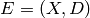
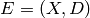
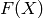
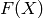
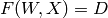

01 - Introduction¶
Motivating Problems¶
- Handwritten character recognition.
- Fingerprint recognition (e.g. at border control.)
- Face Recognition (e.g. security access to building)
Can Machines Learn to Solve These Problems?¶
More precisely can we program machines to learn to do these tasks?
Definition of Learning¶
A computer program is said to learn from experience  with respect to some class of tasks and performance measure
with respect to some class of tasks and performance measure  , if its performance at tasks in , as measured by , improves with experience .
, if its performance at tasks in , as measured by , improves with experience .
Handwriting Recognition Problem:
The task is to recognise hand written characters. Thee measure of performance is the percent of characters correctly classified. The training experience is a database of handwritten characters with given classifications.
Design a Learning System¶
Treating the learning system as a black box, the handwritten character is the input and the output is the digital representation of the perceived character.
- Step 1 Collect Training Examples (Experience)
- Without examples our system cannot learn.
- Step 2 Representing the Experience
We must choose a representation scheme for the experience we are encountering. In this case we could imagine an 8x8 grid over the particular handwritten character, recording a 1 for each box in the grid if the amount of ink in that area is covers a certain area.
We call the digital representation of the input a feature vector.
For any one encounter with some input (or experience) we combine the input data (
 ) with what we know (as humans) the character to be (
) with what we know (as humans) the character to be ( ) to represent the experience:  completely.
) to represent the experience:  completely.Since as a designer we can decide that the system will only recognise 10 digits (0 - 9) we can make the job a lot easier.
- Step 3 Choose a Representation for the Black Box
We need to choose a function
 to approximate the black box which is the learning system. So the input is and the output is .
to approximate the black box which is the learning system. So the input is and the output is .The hard part of machine learning is discovering the algorithm.
The algorithm needs to be able to adapt to the environment (which is represented by the experience). This means it should not only accept the input data but also be adjustable.
- Step 4 Learning/Adjusting the Weights
The learning algorithms should adjust the weights inputed into the algorithm such that the experience and prior knowledge may be learned into the system.
the experience is represented by the input and known training value
 the output is derived from an algorithm which accepts weights and the input data.
When the learning starts the weights we feed into the algorithm will be incorrect as we don’t know what they should be. We want to adjust the weights such that the probability of processing inputs incorrectly is reduced.
The iterative process of failing and learning is akin to the human learning process.